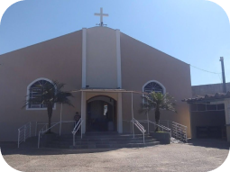

Igreja Matriz São Luis Gonzaga

Endereço
Avenida São Luiz, 755 - Jardim Villaça - São Roque / SP
Horarios de Missa
Todo dia 1: 19h30 durante a semana / 18h30 aos finais de semana
Todo dia 21: 19h30 durante a semana / 18h30 aos finais de semana
Toda Quinta: 19h30
Todo Domingo: 7h30, 10h e 18h30
Atendimentos
Confissões toda Quinta das 18h às 19h
Atendimentos com horario marcado das 9h às 12h
Secretaria Paroquial
Terça a Sexta: 10h às 13h / 14h às 17h
Sábado: 14h às 18h